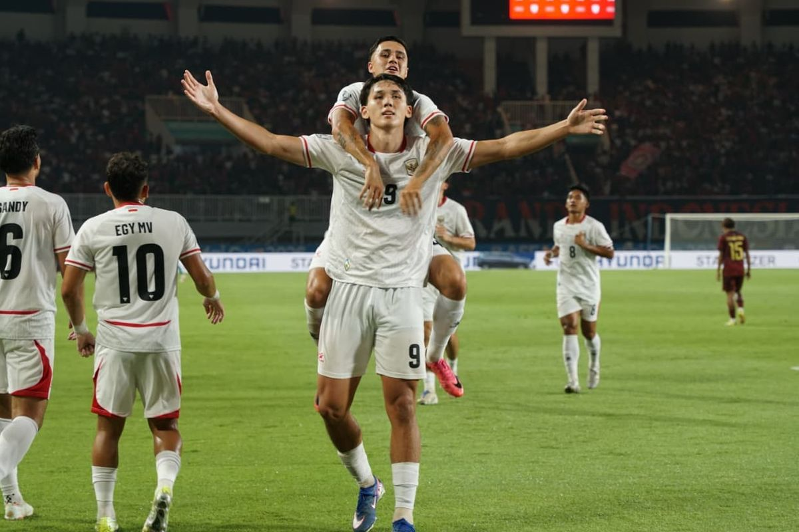

Timnas Indonesia mampu mencetak gol cepat di menit keenam ketika tandukan Mitchell Baker gagal diantisipasi oleh kiper Kamboja, Kimhuy Hul. Baker, yang pada laga timnas Indonesia vs Kamboja ini menjalani debut mampu menambah gol pada menit ke-14 usai memanfaatkan pergerakan Eliano Reijnders di sisi kanan dan mengubah kedudukan menjadi 2-0. Hanya membutuhkan waktu 10 menit, tim asuhan John Herdman kembali menambah keunggulan melalui aksi Sandy Walsh usai memanfaatkan tendangan sudut Thom Haye. Hingga babak pertama usai, tidak ada gol tambahan tercipta, sehingga Timnas Indonesia tetap unggul 3-0 atas Kamboja.
Pelatih timnas Indonesia, John Herdman mengubah susunan pemain dengan menarik Ivar Jenner dan memasukkan Egy Maulana Vikri untuk menambah daya gedor ke pertahanan Kamboja di babak kedua laga Grup A ASEAN Championship 2026 atau Piala AFF 2026.
Baca juga: LIVE Timnas Indonesia Vs Kamboja 3-1: Blunder Nadeo Argawinata di Awal Babak Kedua
Namun, Kamboja kemudian mampu mencetak gol manakala satu tendangan spekulasi pemain mereka gagal diantisipasi dengan baik oleh kiper timnas Indonesia, Nadeo Argawinata di menit ke-48. Timnas Indonesia sempat mendapatkan peluang emas di depan gawang Kamboja melalui Egy Maulana Vikri dan Mitchell Baker yang gagal menambah keunggulan di menit ke-53. Mitchell Baker benar-benar menunjukkan ketajamannya pada pertandingan ini ketika berhasil menanduk umpan Thom Haye pada menit ke-56 yang kemudian membuat kiper Kamboja, Kimhuy Hul terpaku menatap bola membobol gawangnya. Memasuki menit ke-70, timnas Indonesia sempat sedikit kesulitan ketika Kamboja juga sempat mencoba balik melakukan tekanan, tetapi Rizky Ridho dan rekan di lini pertahanan masih mampu melakukan halauan.